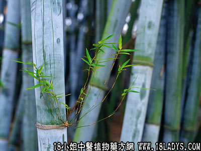

生竹心(中药材植物名:粉单竹)(植物科目:禾本科)

别名：竹叶卷心、竹针、竹必。
植物名：粉单竹。
生长环境：栽培于村边或野生于郊野。
分布：我国两广、海南岛、广州近郊。
入药部分：未开的叶。
采集期：全年。在晨早日光未出时采为佳。
自采地点：郊外、园林。
性味：性凉、味甘。
功能：清心火、利尿。
主治、用量和用法：1、癍痧热症，配伍用；2、心肝火盛，配伍用；3、麻疹发热：生用1至3钱，清水煎服；4、眼热：生用3至5钱，清水煎服。
验方1：（治癍痧热症方）生竹心3钱、路兜簕根5钱、狗肝菜1两、海金沙藤5钱、山芝麻5钱、狮子滚球5钱、清水四晚，煎成一碗半服。
（方解）此方生竹心清心热，海金沙藤导心热于小肠，山芝麻泻热于大肠，狮子滚球去癍痧，清腹中热滞，路兜簕、狗肝菜清实热，为治癍痧之重剂。
（方歌）癍痧大热有竹心，路兜簕根狮子球，山麻海藤狗肝菜，清心利尿毒难留。
验方2：（治小儿外感发热而久热不退方）生竹心3钱、旱莲草5钱、磨盘草5钱、清水三碗半，煎成一碗服。
（方解）此方以竹心清心为主，辅以旱莲草清肝火，磨盘草清肺肾虚热，为甘凉退热法，不仅初起发热有效，久热不退亦有效。
（方歌）小儿发热势不休，旱莲草与生竹心，磨盘草根煎水服，甘凉退热见功深。
验方3：（治小儿肝火盛方）生竹叶心2钱、独脚柑2钱、孩儿草3钱、清水一碗半，煎成大半碗，分三次服。
（方解）本方竹心泻心火，孩儿草、独脚柑清肝热，去疳积；对治疗小儿心肝火盛及疳积疾患有效。
（方歌）小儿肝火或生疳，生竹心同独脚柑，加入孩儿草煎服，清肝去积泻君心。
参考资料：《重庆祖国医学采风录》用鲜竹叶心一两，煎水代茶，治久病失眠，诸治无效，属阳气不如阴者。